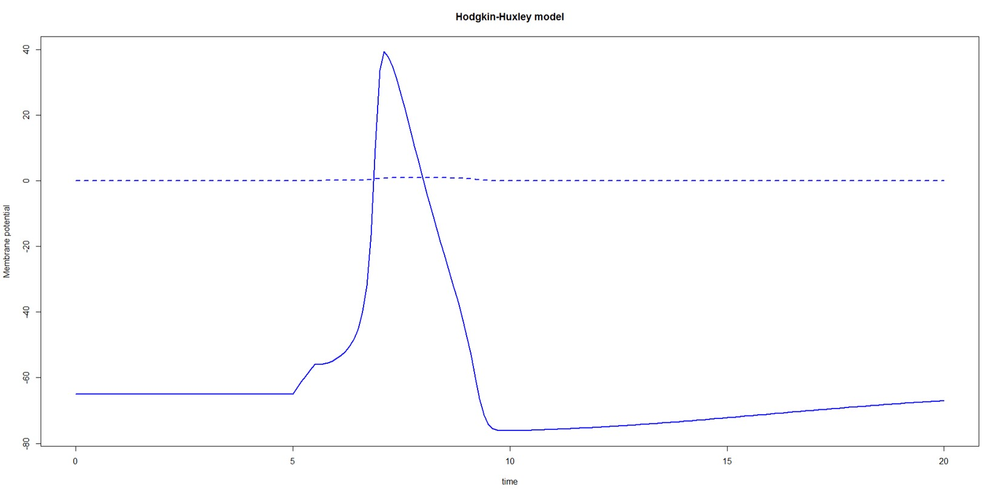

This is the readme.txt for the model associated with the papers 1. Hodgkin AL, Huxley AF. A quantitative description of membrane current and its application to conduction and excitation in nerve. 2. Chen BS, Lo YC, Liu YC, Wu SN. Effects of transient receptor-like current on firing pattern of actions potentials in the Hodgkin-Huxley neuron during exposure to sinusoidal external voltage. Abstract: Transient receptor potential vanilloid-1 (TRPV1) channels play a role in several inflammatory and nociceptive processes. Previous work showed that magnetic electrical field-induced antinociceptive [corrected] action is mediated by activation of capsaicin-sensitive sensory afferents. In this study, a modified Hodgkin-Huxley model, in which TRP-like current (ITRP) was incorporated, was implemented to predict the firing behavior of action potentials (APs), as the model neuron was exposed to sinusoidal changes in externally-applied voltage. When model neuron is exposed to low-frequency sinusoidal voltage, increased maximal conductance of ITRP can enhance repetitive bursts of APs accompanied by a shortening of inter-spike interval (ISI) in AP firing. The change in ISIs with number of interval is periodic with the phase-locking. In addition, increased maximal conductance of ITRP can abolish chaotic pattern of AP firing in model neuron during exposure to high-frequency voltage. The ISI pattern is converted from irregular to constant, as maximal conductance of ITRP is increased under such high-frequency voltage. Our simulation results suggest that modulation of TRP-like channels functionally expressed in small-diameter peripheral sensory neurons should be an important mechanism through which it can contribute to the firing pattern of APs. ------- R is available from http://www.R-project.org. To run this model, R package deSolve is required. Here is a screen shot of the model running supplied by the model authors:  This model file was submitted by: Sheng-Nan Wu and Yung-Hun Wu Cardiac Electrophysiology and Systems-biology Center National Cheng Kung University Medical Center Tainan 70101, Taiwan snwu@mail.ncku.edu.tw Note: an XPP model is also available in ModelDB for this paper: ModelDB accession number 137263